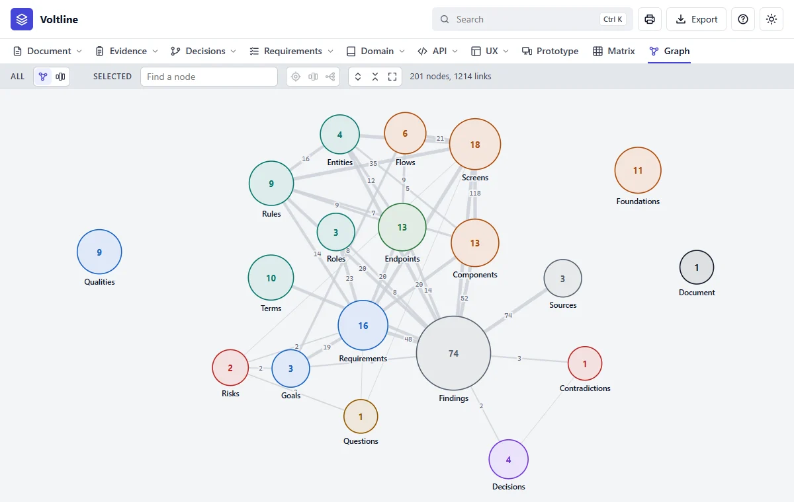
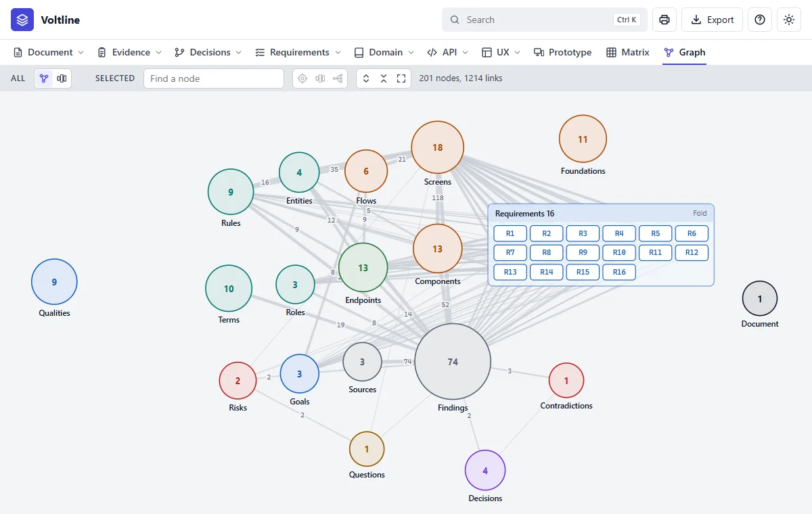
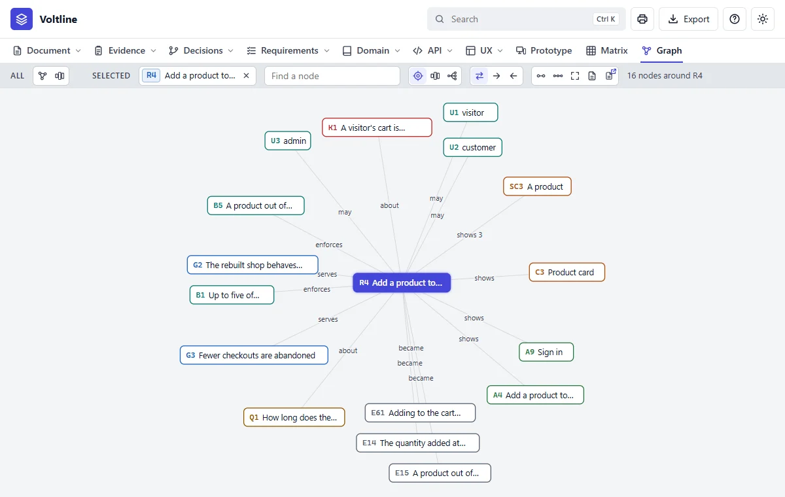
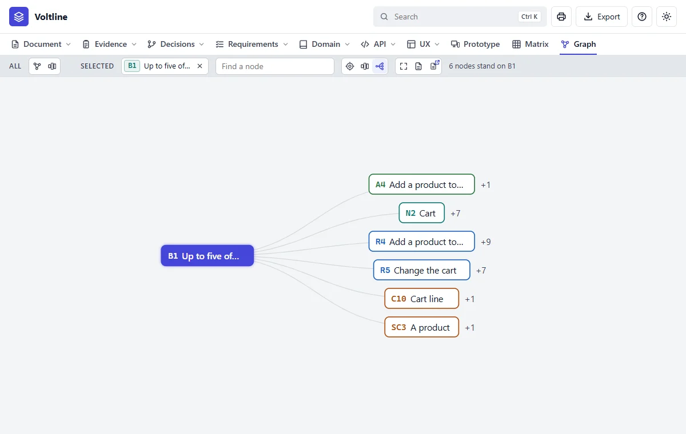
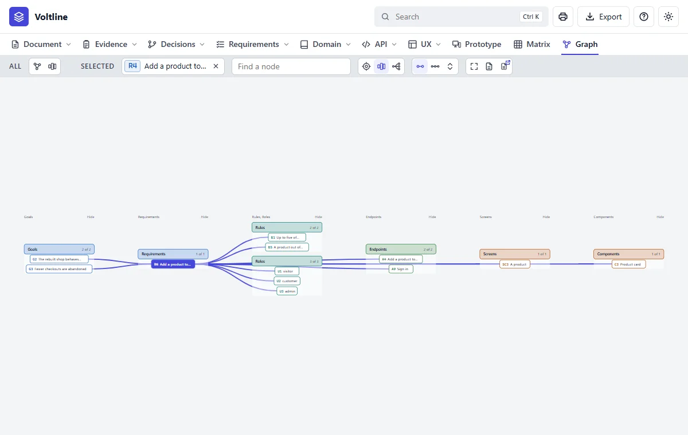
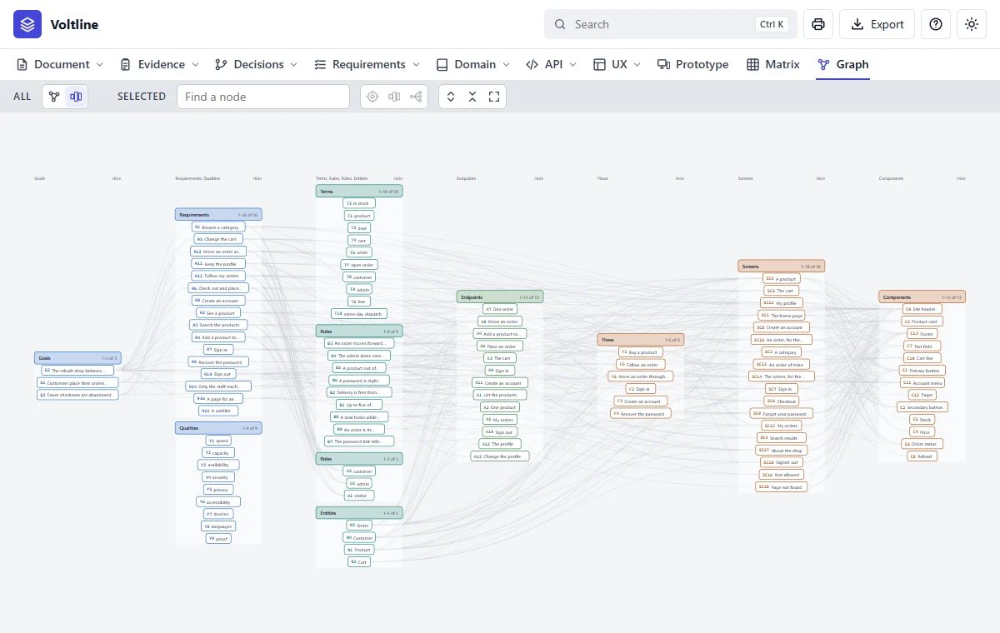

Graph
In everyday termsThe metro map. This is the specification drawn as dots and lines, so you can see its shape. As with a real map, you don't read it all: you find where you are and look around.
What it answersHow does it all fit together, and what would a change reach?
The Graph is a set of pictures of the same links. Choose by the question you have.
The map

- 1All. Pictures of the whole specification: the map and Layers.
- 2Selected. Pictures of one node: Around, Layers and Impact.
- 3Find a node. Type, and press Enter.
- 4A kind. Bigger means more. Click to open it.

Around: what is it tied to?

- 1The selected node. It stays selected from one picture to the next.
- 2The arrows. Narrow it to links out or links in.
- 3The count. What's in this picture.
Click a node to spread its links, double click to put it in the middle, and drag it to pin it. Right click any node for its card.
Impact: what would a change reach?

- 1The node you might change.
- 2The number says how many more stand on this one. Click to go a step further.
Layers: where does it sit?

- 1The selected node. The strong lines are its own links.

How to use it
| To | Do this |
|---|---|
| Open a kind | Click its bubble. It becomes a box of its nodes, and the lines go to the nodes |
| Fold it again | Click the box's title |
| Select a node | Click it, or find it. It stays selected from one picture to the next, until its x. Back returns to the same picture |
| See more of a big kind | Click the last tile of its box, the one that says how many are left |
| See what a node is, in any picture | Right click it. Its card opens with its name, what it says and how it stands |
| See what something is linked to | Point at it. Its links light up and the rest fade |
| Move a kind | Drag its bubble, or its box by the title |
| Pan and zoom | Drag the background, and scroll |
| See everything again | The fit icon, or the icons that open and fold every kind |
| Go to a node | Type in Find a node, and press Enter |
A criterion or an element isn't drawn on its own. It counts as the node that holds it, so a link from R4.2 shows as a link from R4. Graph needs an internet connection the
first time it opens, to fetch D3, the library that lays it out. Without one the page says so.
Mistakes people make
- Trying to read everything at once. Select a node, and let the picture narrow itself.
- Reading a line's thickness as importance. It says how many links there are, not how much they matter.